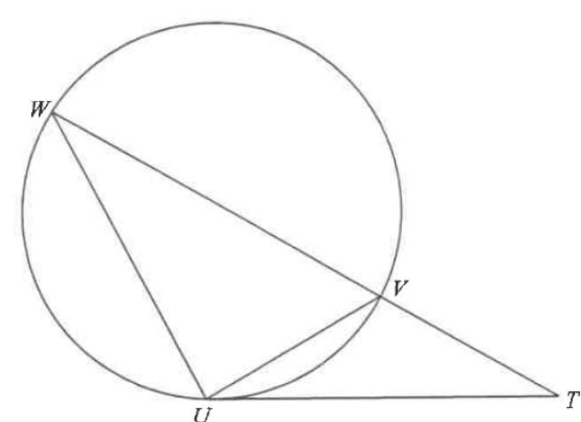

圓形 · 切線與相似三角形 · 7 分題

$$\angle TUV=\angle TWU\quad(\text{內錯弓形的角})$$
兩三角形另有公共角 $\angle UTV=\angle WTU$，故
$$\triangle UTV\sim\triangle WTU\quad(\text{AAA})$$
$$TW=\frac{TU^{2}}{TV}=\frac{780^{2}}{325}=1872\ \text{cm}$$
$$VW=TW-TV=1872-325=1547\ \text{cm}$$
因 $VW$ 為直徑，圓周界為
$$1547\pi\ \text{cm}$$
由 (a) 的相似關係：
$$UV:UW=TV:TU=325:780=5:12$$
$\triangle UVW$ 在 $U$ 為直角，兩股比為 $5:12$，由畢氏定理得
$$UV:UW:VW=5:12:13$$
$$UV=1547\times\frac{5}{13}=595,\qquad UW=1547\times\frac{12}{13}=1428$$
$$\text{周界}=595+1428+1547=3570\ \text{cm}=35.7\ \text{m}$$
因 $35.7\ \text{m}>35\ \text{m}$，故同意該聲稱。